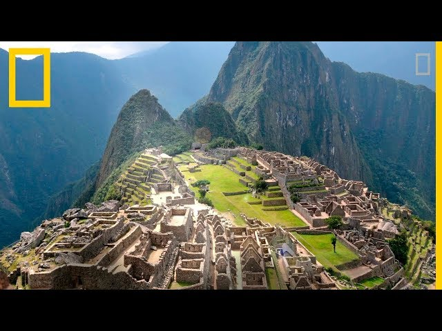
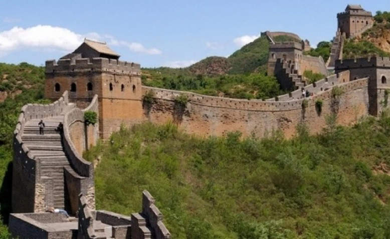
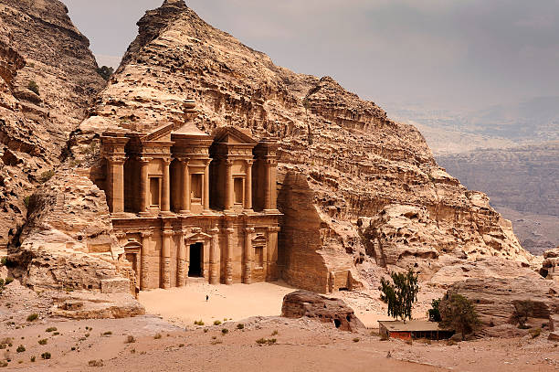
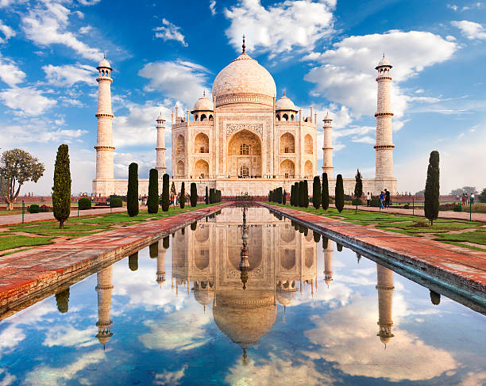
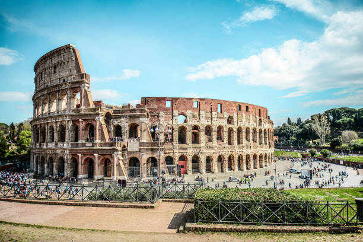

El Cristo Redentor es una estatua gigante de Jesucristo ubicada en la cima del Cerro del Corcovado en Río de Janeiro, Brasil. Con una altura de 38 metros, fue inaugurada en 1931 y es un símbolo de la fe cristiana en Brasil. La estatua, hecha de hormigón armado y piedra jabón, es famosa por su posición con los brazos extendidos, que simbolizan la paz y el abrazo a la humanidad. Desde su plataforma se puede disfrutar de vistas panorámicas espectaculares de la ciudad y la bahía de Guanabara.
Las ruinas de machu Picchu
Machu Picchu es una ciudad inca construida en el siglo XV sobre una montaña en la Cordillera de los Andes, a unos 2,430 metros sobre el nivel del mar. Su propósito exacto aún es objeto de debate, pero muchos creen que fue una residencia real o un centro religioso. La ciudad es un testimonio de la impresionante capacidad de ingeniería de los incas, con terrazas agrícolas, templos y plazas que muestran un dominio asombroso de la piedra y el entorno. La belleza natural y la complejidad arquitectónica de Machu Picchu la han convertido en uno de los destinos turísticos más importantes de América del Sur.

La gran muralla china
La Gran Muralla es una de las obras de ingeniería más asombrosas del mundo, construida entre los siglos III a.C. y el siglo XVII para proteger a los estados y territorios chinos de las invasiones de tribus nómadas, especialmente los mongoles. Tiene una longitud de más de 20,000 kilómetros y atraviesa montañas, desiertos y llanuras. Aunque no es visible desde el espacio como a veces se cree, su enorme tamaño y su construcción a lo largo de cientos de años la convierten en una maravilla extraordinaria de la antigüedad y la historia de China.

La ciudad de Petra
Petra, conocida como la "ciudad rosa" por el color de la roca en la que está esculpida, fue la capital del reino nabateo alrededor del siglo VI a.C. Esta ciudad está tallada directamente en los acantilados de arenisca en el desierto del sur de Jordania. Sus elaborados templos y tumbas, como El Tesoro (Al-Khazneh) y el Monasterio (Ad Deir), combinan elementos de arquitectura helenística y nabatea. Petra fue un importante cruce de rutas comerciales entre Arabia, Egipto y Siria, lo que contribuyó a su prosperidad.

El palacio del taj Majal
El Taj Mahal es un mausoleo de mármol blanco construido por el emperador mogol Shah Jahan en honor a su esposa favorita, Mumtaz Mahal, quien murió en 1631 durante el parto. El edificio, que se completó en 1648, es conocido por su simetría perfecta y su cúpula central rodeada de minaretes. Su diseño incorpora elementos de arquitectura islámica, persa, otomana e india. El Taj Mahal es también un símbolo del amor eterno y una de las obras más impresionantes del mundo, tanto por su belleza arquitectónica como por su rica historia.

El coliseo romano
El Coliseo de Roma, construido entre los años 70-80 d.C., es el anfiteatro más grande jamás construido y es una representación poderosa del ingenio arquitectónico y la cultura de la antigua Roma. En su época de esplendor, podía albergar a unos 50,000 espectadores que asistían a eventos como combates de gladiadores, ejecuciones y simulacros de batallas navales. Aunque parte del edificio ha sido destruido con el tiempo, sigue siendo un símbolo duradero del poder del Imperio Romano y una de las atracciones más visitadas del mundo.

La ciudad de Chichen Itzá
Chichén Itzá fue una de las ciudades más importantes de la civilización maya, situada en la península de Yucatán. La pirámide de Kukulkán, también conocida como El Castillo, es su estructura más famosa. Esta pirámide escalonada tiene 365 escalones, uno por cada día del año, y durante los equinoccios, el sol crea un efecto de luz y sombra que parece mostrar una serpiente descendiendo por las escaleras. Además de la pirámide, Chichén Itzá alberga una gran variedad de estructuras, como templos, un observatorio astronómico y el Juego de Pelota, que revelan la avanzada astronomía, matemáticas y arquitectura de los mayas.